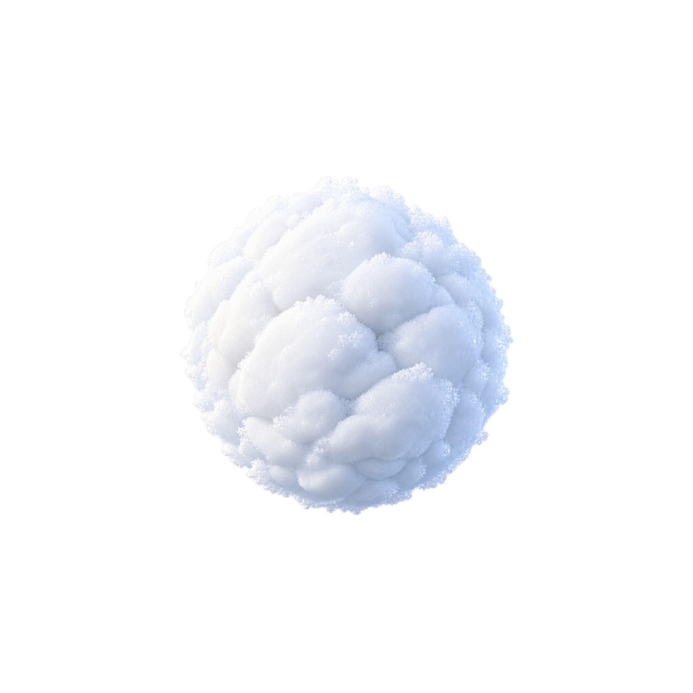
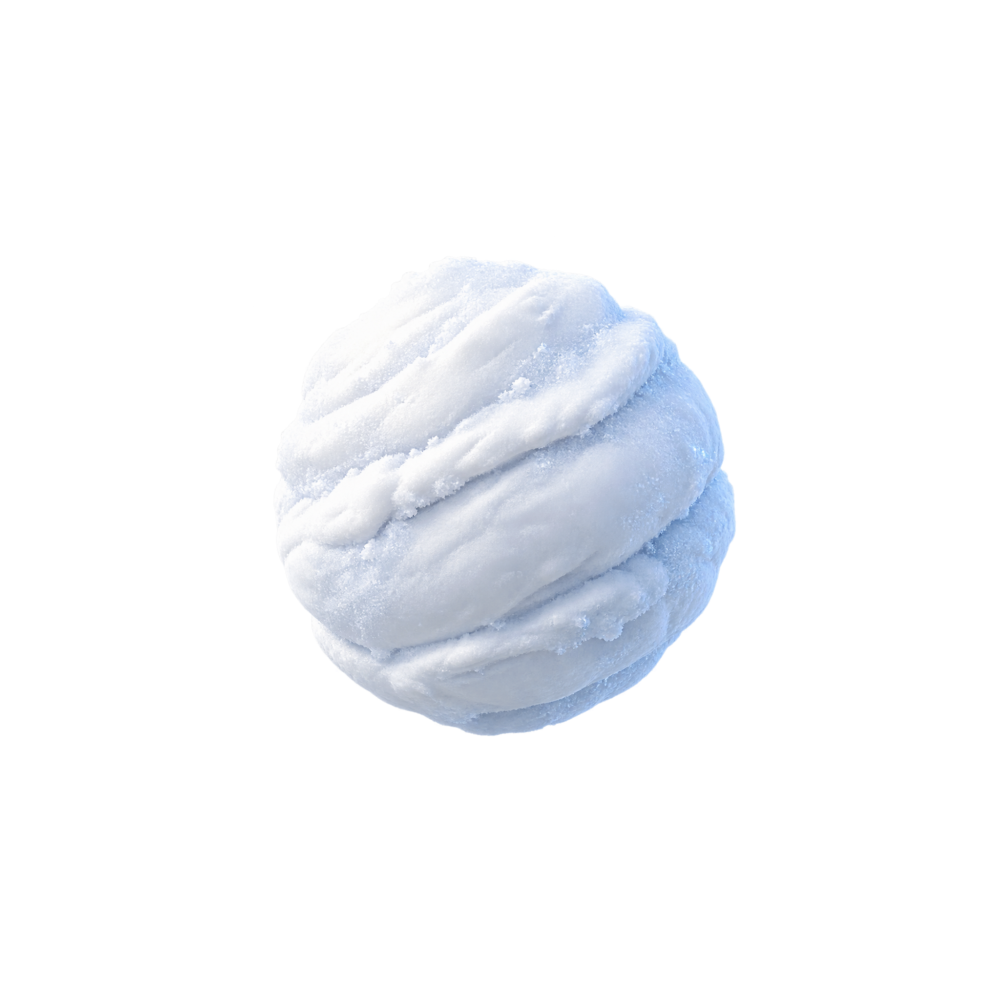
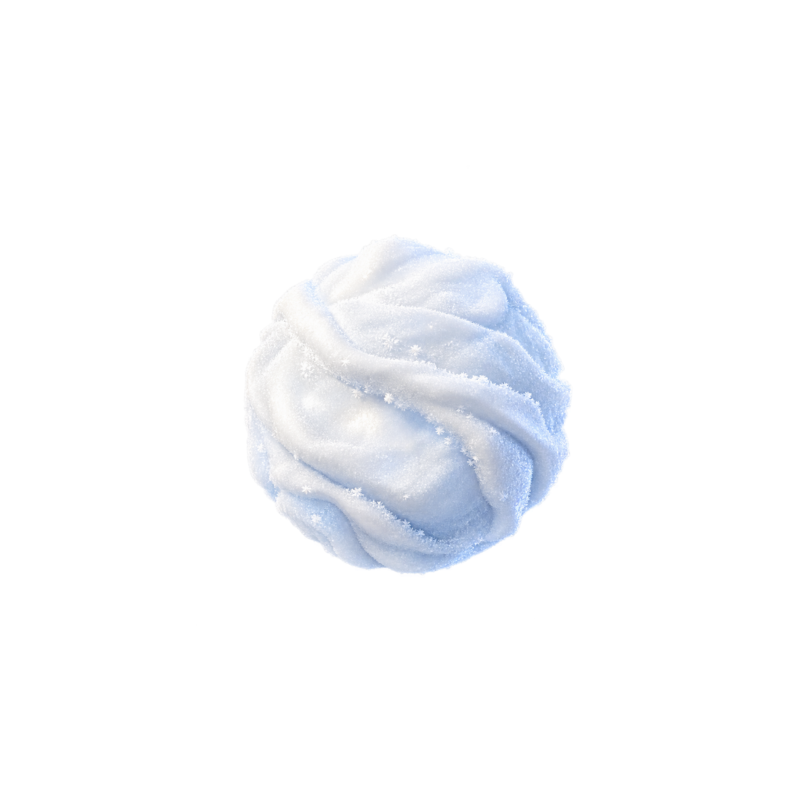

A · Powder Nest
Overlapping plush powder clumps and pillowy dimples. Softest, friendliest, and most tactile.
96 px concept preview
48 px concept preview
Concept selection only. Transparent backgrounds are shown over a dark checker. Runtime reduction and wiring wait for user selection.

Overlapping plush powder clumps and pillowy dimples. Softest, friendliest, and most tactile.

Broad compressed wrap bands and accumulation ridges. Most kinetic, hand-rolled, and grounded.

Offset airy snow folds, fine rime sparkle, and diffuse pearly light. Most magical and elegant.